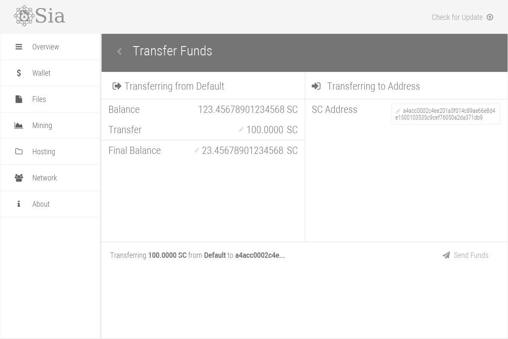
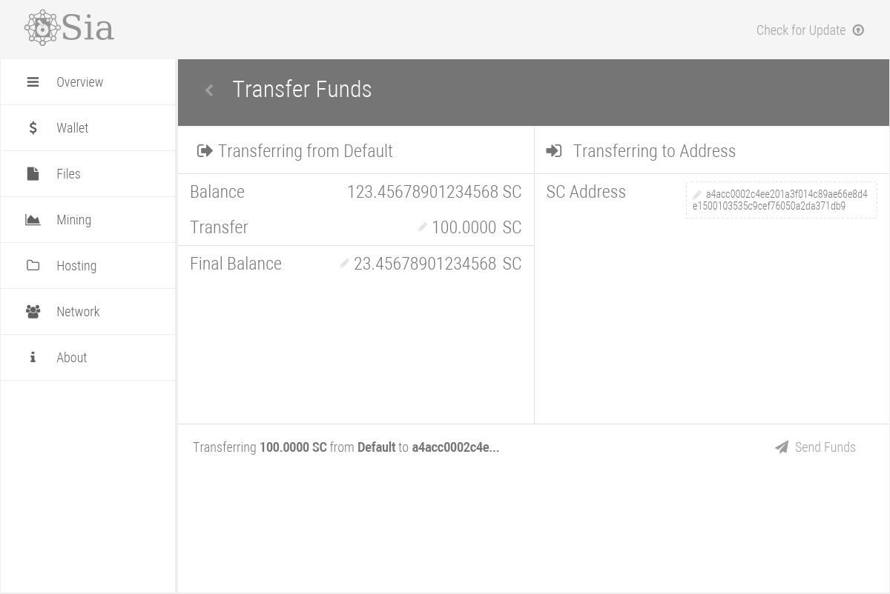

Anybody with spare storage space can join the network as a host and get income from that storage. This openness allows Sia to tap into the mllions of terabytes of unused storage in the world. The encryption combined with the geographic diversity of hosts gives users both privacy and high reliability.
The long term goals of Sia involve leveraging a global network of hosts to improve upon existing cloud storage platforms. We believe that we will see improvements in price, security, availability, latency, and throughput compared to traditional object stores. Availability, latency, and throughput are all benefitted by storing data in hundreds of places at the same time. Out of the hudreds of places, data only needs to be retrived from a handful, and the client can choose the closest and fastest hosts for retrieving the file. For larger files, downloads can be done in parallel, using all of the hundreds of hosts simultaneously. Even when the average host has a slow upload speed, the combined speed of hundreds of hosts means that downloads will be blazing fast. In many ways, a global decentralized network of storage hosts is similar to a CDN. More about the technology can be found on the about page →
Sia is in the final few weeks of beta, the beta can be downloaded at the bottom of the page.
The full network will be launching on June 7th, 2015.
 
